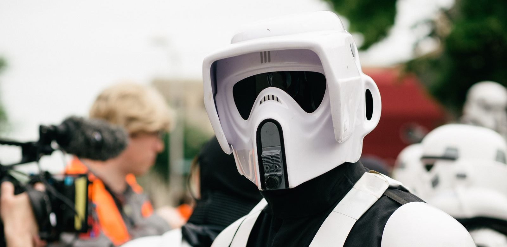

LEGO Star Wars voor beginners
In Star Wars vliegen helden door de ruimte in coole ruimteschepen. Met LEGO bouw je die zelf en speel je de avonturen daarna na.

In het kort
Begin met een microfighter of een battle pack, niet met een groot ruimteschip. Die zijn in een uurtje af, kosten weinig, en er zit een poppetje bij waarmee je daarna kunt spelen. Een grote set is een mooi cadeau, maar hij is pas leuk als het bouwen zelf al leuk is.
| LEGO Star Wars bestaat sinds | 1999, het eerste thema waarvoor LEGO een licentie nam |
| Waar de leeftijd staat | Linksboven op de doos, in een hoekje |
| Waar het setnummer staat | Ook op de doos, vier of vijf cijfers, bijvoorbeeld 75391 |
| Handigste eerste set | Een microfighter: klein voertuig, één poppetje |
| De grootste set ooit in dit thema | De Millennium Falcon uit 2017 (75192), met 7.541 onderdelen |
De soorten sets, en voor wie ze zijn
| Soort | Wat je krijgt | Voor wie |
|---|---|---|
| Sets met "4+" op de doos | Grote onderdelen en een stuk dat al in elkaar zit | 4 tot 6 jaar, de allereerste set |
| Microfighter | Een klein, dik voertuig met één poppetje | 6 tot 9 jaar, in een uurtje af |
| Battle pack | Vier poppetjes en een klein bouwwerk | 6 tot 10 jaar, om mee te spelen |
| Gewone sets uit de serie | Een ruimteschip op speelformaat, meerdere poppetjes | 8 tot 12 jaar |
| Helmen | Een helm op een sokkel, niets om mee te spelen | 18 jaar en ouder, om neer te zetten |
| Ultimate Collector Series | Duizenden onderdelen, een plaatje met gegevens erbij | 18 jaar en ouder, dagen werk |
Zo kies je de eerste set, in vier stappen
- Kijk eerst naar de leeftijd op de doos, niet naar het plaatje. Het plaatje verkoopt elke set aan elk kind; het hoekje linksboven zegt of het bouwen gaat lukken.
- Kies een schip of figuur dat je kind kent. Een X-wing, de Millennium Falcon of een voertuig van iemand uit de serie die het gezien heeft. Een onbekend schip uit een film die het nooit zag, blijft in de doos.
- Tel de poppetjes. Een set zonder poppetje wordt na het bouwen niet meer aangeraakt. Met één poppetje kun je spelen; met vier kun je een gevecht naspelen.
- Houd de eerste set klein. Twee kleine sets die allebei af komen, zijn meer waard dan één grote die halverwege blijft steken.
Waar je op let op de doos
- Het aantal onderdelen. Onder de 150 is een avondje; boven de 500 is het een project van een weekend.
- Het setnummer. Handig bij het zoeken naar een bouwhandleiding, want die staan allemaal gratis online.
- Of het een licht- of geluidsdeel heeft. Dat gaat op een dag stuk of leeg, en dan is dat stuk van de set dood.
- Of er stickers bij zitten in plaats van bedrukte onderdelen. Stickers plakken scheef, en dat is voor sommige kinderen echt een teleurstelling.
Een goede eerste set
Y-wing microfighter met Captain Rex
Precies wat een eerste set moet zijn: klein genoeg om in één keer af te maken, met een poppetje erbij zodat er daarna iets te spelen valt. De Y-wing is bovendien een schip dat in bijna elke Star Wars-film en -serie voorkomt, dus het is geen onbekend ding uit een hoekje van het verhaal. Van alle microfighters die we bekeken, is dit ook de best beoordeelde.
- De best beoordeelde microfighter die we tegenkwamen
- In een uurtje af, dus het bouwen is nooit te veel
- Er zit een poppetje bij, dus er valt daarna mee te spelen
- Klein, dus naast een grote set valt hij weg
- Eén poppetje betekent geen tegenstander
- Levertijd loopt op, dus niet voor een verjaardag van morgen
Wat wij niet zouden kopen
- Een set uit de Ultimate Collector Series als eerste set. Die staat op 18 jaar en ouder, en dat is geen voorzichtigheid van LEGO maar een eerlijke inschatting van het aantal uren.
- Een helm voor een kind. Je bouwt hem één keer en zet hem daarna neer. Voor een volwassen fan is dat precies de bedoeling, voor een kind van acht is het een teleurstelling.
- Losse onderdelen of een doos "gemengde" stenen van een onbekende verkoper. Zonder handleiding en zonder te weten wat er ontbreekt, komt er niets uit.
👪 Tip voor ouders
De bouwhandleidingen van alle sets staan gratis op de site van LEGO zelf, op setnummer te zoeken. Handig als het boekje kwijt is, en ook om vooraf te kijken hoeveel stappen een set eigenlijk heeft. Let bij een tweedehands set op het setnummer en niet op de foto: dezelfde schepen zijn door de jaren heen vaak opnieuw uitgebracht, in verschillende formaten en prijsklassen.
💡 Wist je dat?
De kleine robot R2-D2 piept en fluit in plaats van praten, en toch snapt iedereen precies wat hij bedoelt.
Leuk om te hebben
Leuke LEGO Star Wars sets om mee te beginnen:
Wil je de films op de juiste manier kijken? Lees de Star Wars kijkvolgorde.